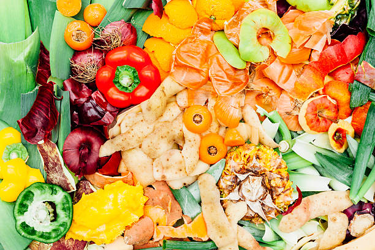

Dampak dari Perusahaan
Transparansi dan keberlanjutan merupakan inti dari semua yang kami lakukan di Daru Lab. Kami percaya bahwa setiap orang berhak mengetahui apa yang ada di dalam produk yang mereka gunakan setiap hari dan bagaimana produk tersebut memengaruhi planet ini. Kami membagikan laporan ini kepada Anda untuk menunjukkan bagaimana kami memberikan dampak positif sebagai perusahaan, dan mengapa hal ini penting bagi Anda.
